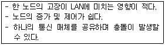
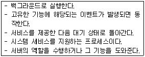

네트워크관리사-2급 (2016-07-24 기출문제)
1과목: TCP/IP
1. IPv4와 IPv6를 비교 설명한 것 중 올바른 것은?
- IPv4는 자체적으로 IPsec과 같은 보안 프로토콜을 내장하고 있지만, IPv6는 보안 프로토콜의 추가가 필요하다.
- IPv4는 필드 구분을 위해 '.'을 사용하고, IPv6는 ';'으로 구분한다.
- IPv4의 각 필드는 10진수로 표시되나, IPv6의 각 필드는 16진수로 표시된다.
- IPv4는 4개의 16bit 정수로 나누어지나, IPv6는 8개의 32bit 정수로 구분된다.
(정답률: 83%)

2. Ping에 대한 설명 중 옳지 않은 것은?
- TCP/IP 프로토콜을 사용하는 응용 프로그램이다.
- 원격 호스트까지의 패킷이 도달하는 왕복 시간을 측정할 수 있다.
- 원격 호스트에 네트워크 오류가 있을 경우, 이를 확인하고 오류를 정정해 준다.
- 원격 호스트와의 연결 상태를 진단할 수 있다.
(정답률: 86%)
3. IP Header의 내용 중 TTL(Time To Live)의 기능을 설명한 것으로 옳지 않은 것은?
- IP 패킷은 네트워크상에서 영원히 존재할 수 있다.
- 일반적으로 라우터의 한 홉(Hop)을 통과할 때마다 TTL 값이 '1' 씩 감소한다.
- Ping과 Tracert 유틸리티는 특정 호스트 컴퓨터에 접근을 시도하거나 그 호스트까지의 경로를 추적할 때 TTL 값을 사용한다.
- IP 패킷이 네트워크상에서 얼마동안 존재 할 수 있는가를 나타낸다.
(정답률: 84%)
4. 원격호스트 'aaa.bbb.ccc'에 Telnet으로 접속하기 위해 사용한 명령어 'telnet aaa.bbb.ccc : 9999'에서, '9999'가 뜻하는 것은?
- 사용자 번호
- 네트워크 주소
- 포트 번호
- IP Address
(정답률: 91%)
5. '255.255.255.224'인 서브넷에 최대 할당 가능한 호스트 수는?
- 2개
- 6개
- 14개
- 30개
(정답률: 73%)
6. IPv6 헤더 형식에서 네트워크 내에서 데이터그램의 생존기간과 관련되는 필드는?
- Version
- Priority
- Next Header
- Hop Limit
(정답률: 70%)
7. TCP(Transmission Control Protocol)에 대한 설명으로 옳지 않은 것은?
- 연결위주의 전송방식이다.
- 신뢰성 있는 전송방식이다.
- 능동적인 흐름제어기능을 가지고 있다.
- 일부 데이터가 손실되어도 치명적이지 않은 프로그램 등에 적합하다.
(정답률: 82%)
8. UDP 세션을 이용하여 네트워크를 관리하는데 사용되는 프로토콜은?
- CMIP
- SMTP
- SNMP
- TFTP
(정답률: 74%)
9. OSI 7 Layer 중 네트워크 계층 Protocol에 해당되지 않는 것은?
- ARP
- ICMP
- SNMP
- IGMP
(정답률: 66%)
10. Anonymous FTP에 대한 설명으로 적당하지 않은 것은?
- 사용자 계정이 없어도 파일을 수신 할 수 있다.
- 'Anoymous' 또는 'FTP'를 계정으로 사용한다.
- 일반적으로 23번 포트를 사용하여 상호 통신한다.
- Internet의 많은 컴퓨터들이 Anonymous FTP를 사용하여, 문서, S/W 등 여러 종류의 정보를 제공한다.
(정답률: 69%)
11. SSH에 대한 설명으로 올바른 것은?
- 데이터 전송 시 UDP 프로토콜만을 사용한다.
- 패스워드가 암호화되지 않으므로 패스워드가 보호되지 않는다.
- Secure Shell 이라고 부른다.
- 쌍방 간 인증을 위해 Skipjack 알고리즘이 이용된다.
(정답률: 78%)
12. IGMP 프로토콜의 주된 기능은?
- 네트워크 내에 발생된 오류에 관한 보고 기능
- 대용량 파일을 전송하는 기능
- 멀티 캐스트 그룹에 가입한 네트워크 내의 호스트 관리 기능
- 호스트의 IP Address에 해당하는 호스트의 물리주소를 알려주는 기능
(정답률: 87%)
13. UDP 헤더에 포함이 되지 않는 항목은?
- 확인 응답 번호(Acknowledgment Number)
- 소스 포트(Source Port) 주소
- 체크섬(Checksum) 필드
- 목적지 포트(Destination Port) 주소
(정답률: 75%)
14. IP Address '138.212.30.25'가 속하는 Class는?
- A Class
- B Class
- C Class
- D Class
(정답률: 86%)
15. 네트워크상에서 기본 서브넷 마스크가 구현될 때, IP Address가 '203.240.155.32'인 경우 아래 설명 중 올바른 것은?
- Network ID는 203.240.155 이다.
- Network ID는 203.240 이다.
- Host ID는 155.32가 된다.
- Host ID가 255일 때는 루프백(Loopback)용으로 사용된다.
(정답률: 81%)
16. ARP에 대한 설명 중 올바른 것은?
- TCP/IP 프로토콜에서 데이터의 전송 서비스를 규정한다.
- TCP/IP 프로토콜의 IP에서 접속 없이 데이터의 전송을 수행하는 기능을 규정한다.
- 네트워크의 구성원에 패킷을 보내기 위하여 IP Address를 하드웨어 주소로 변경한다.
- 인터넷상에서 전자우편(E-Mail)의 전송을 규정한다.
(정답률: 82%)
17. ICMP 프로토콜의 기능으로 옳지 않은 것은?
- 여러 목적지로 동시에 보내는 멀티캐스팅 기능이 있다.
- 두 호스트간의 연결의 신뢰성을 테스트하기 위한 반향과 회답 메시지를 지원한다.
- 'ping' 명령어는 ICMP를 사용한다.
- 원래의 데이터그램이 TTL을 초과하여 버려지게 되면 시간 초과 에러 메시지를 보낸다.
(정답률: 71%)
2과목: 네트워크 일반
18. 전송한 프레임의 순서에 관계없이 단지 손실된 프레임만을 재전송하는 방식은?
- Selective-repeat ARQ
- Stop-and-wait ARQ
- Go-back-N ARQ
- Adaptive ARQ
(정답률: 77%)
19. LAN에서 사용하는 CSMA/CD 프로토콜에 대한 설명으로 옳지 않은 것은?
- 무선랜에 사용되는 방식으로 ACK 프레임을 사용하여 전송하기 전에 충돌이 일어나지 않도록 한 후 전송을 시작한다.
- 송신을 원하는 호스트는 송신 전에 다른 호스트가 채널을 사용하는지 조사한다.
- 전송하는 동안 계속적으로 채널을 감시하여 충돌이 발생하는지를 조사한다.
- 충돌이 발생하게 되면 충돌한 데이터들은 버려지고 데이터를 전송한 장치들에게 재전송을 요구한다.
(정답률: 65%)
20. PCM(Pulse Code Modulation)과 가장 관련이 없는 것은?
- PAM(Pulse Amplitude Modulation)
- 양자화
- 부호화
- DM(Delta Modulation)
(정답률: 75%)
21. MAC Address에 대한 설명으로 옳지 않은 것은?
- 48bit의 길이를 갖는다.
- 데이터링크 계층에서 이용된다.
- 실제 데이터 전송은 IP Address를 이용하기 때문에, 같은 네트워크 내에 중복된 MAC Address가 할당되어도 네트워크 오류가 발생되지 않는다.
- 장치 디바이스가 가지고 있는 Address이다.
(정답률: 81%)
22. 패킷 교환 방식의 단점이 아닌 것은?
- 선로 장애 시 복구가 어렵다.
- 패킷 교환을 위한 소프트웨어 및 하드웨어가 복잡하다.
- 큐잉(queuing) 지연이 존재한다.
- 각 패킷마다 주소를 위한 오버헤드가 존재한다.
(정답률: 61%)
23. 흐름제어, 오류제어, 접근제어, 주소 지정을 담당하는 계층은?
- 네트워크 계층
- 데이터링크 계층
- 물리 계층
- 전송 계층
(정답률: 64%)
24. OSI 7 Layer의 각 Layer 별 Data 형태로서 적당하지 않은 것은?
- Transport Layer - Segment
- Network Layer - Packet
- Datalink Layer - Fragment
- Physical Layer - bit
(정답률: 80%)
25. 기가비트 이더넷(Gigabit Ethernet)의 특징 중 옳지 않은 것은?
- IEEE 803.3에 표준으로 정의되어 있다.
- 전송방식으로 기존 이더넷상의 CSMA/CD를 그대로 사용한다.
- 기존 이더넷상의 전송 속도를 초당 1기가비트까지 향상시킨 것이다.
- 기업의 백본(Backbone)망으로도 사용된다.
(정답률: 62%)
26. 802.3 Ethernet 프레임 구조의 구성요소 중 옳지 않은 것은?
- 프리앰블(Preamble) : 7Byte
- 시작문자(SFD) : 1Byte
- 데이터 : 46~1500Byte
- 프레임 확인 시퀀스(Frame Check Sequence) : 5Byte
(정답률: 54%)
27. 다음 설명에 해당하는 LAN의 형태는?

- Star
- Bus
- Ring
- Tree
(정답률: 61%)
3과목: NOS
28. SOA 레코드의 설정 값에 대한 설명으로 옳지 않은 것은?
- 주 서버 : 주 영역 서버의 도메인 주소를 입력한다.
- 책임자 : 책임자의 주소 및 전화번호를 입력한다.
- 최소 TTL : 각 레코드의 기본 Cache 시간을 지정한다.
- 새로 고침 간격 : 주 서버와 보조 서버간의 통신이 두절 되었을 때 다시 통신할 시간 간격을 설정한다.
(정답률: 81%)
29. Windows Server 2008 R2에서 'www.icqa.or.kr'의 IP Address를 얻기 위한 콘솔 명령어는?
- ipconfig www.icqa.or.kr
- netstat www.icqa.or.kr
- find www.icqa.or.kr
- nslookup www.icqa.or.kr
(정답률: 76%)
30. 다음 설명에 해당하는 프로세스는?

- shell
- kernel
- program
- daemon
(정답률: 81%)
31. Linux의 퍼미션(Permission)에 대한 설명 중 옳지 않은 것은?
- 파일의 그룹 소유권을 변경하기 위한 명령은 'chgrp'이다.
- 파일의 접근모드를 변경하기 위한 명령은 'chmod'이다.
- 모든 사용자에게 모든 권한을 부여하려면 권한을 '666'으로 변경한다.
- 파일의 소유권을 변경하기 위한 명령은 'chown'이다.
(정답률: 87%)
32. Linux에서 주어진 명령어의 도움말(매뉴얼)을 출력하기 위해 사용되는 명령어는?
- ps
- fine
- man
- ls
(정답률: 85%)
33. Linux에서 네트워크 설정에 대한 설명으로 옳지 않은 것은?
- Linux는 Windows 시스템과 같이 완벽한 PnP 기능을 지원하지 못한다.
- LAN 카드 설치는 Linux 커널에 드라이버를 포함시키거나, 필요할 때마다 메모리에 로딩 할 수 있다.
- LAN 카드를 메모리에 로딩해서 사용하려면 ‘modprobe’ 명령을 사용한다.
- 네트워크 설정은 ‘ipconfig’ 로 확인 할 수 있다.
(정답률: 74%)
34. Windows Server 2008 R2에서 파일 및 프린터 서버를 사용할 수 있도록 지원하기 위해서 반드시 설치해야 하는 통신 프로토콜은?
- TCP/IP
- SNMP
- SMTP
- IGMP
(정답률: 74%)
35. Windows Server 2008 R2의 FTP Server에 관한 설명으로 옳지 않은 것은?
- Windows Server 2008 R2에 기본적으로 포함되어 있지 않기 때문에 'www.iis.net' 에서 다운로드 하여야 한다.
- IIS 7의 웹사이트에 FTP 기능을 추가 할 수 있다.
- FTP는 별도의 프로토콜이기 때문에 명시적으로 IP주소, 포트를 계획해야 한다.
- FTP 구성 시 SSL 사용여부를 결정할 수 있다.
(정답률: 57%)
36. Windows Server 2008 R2 서버 상에서 네트워크 모니터링에 대한 설명으로 옳지 않은 것은?
- 성능 모니터의 리소스 모니터를 통해 네트워크 이용현황을 모니터링할 수 있다.
- 작업 관리자의 네트워킹 탭을 통해 네트워크 이용현황을 모니터링할 수 있다.
- 바이트 처리량이란 현재 연결 대역폭 중에 트래픽 송수신에 사용하는 비율이다.
- 유니캐스트 패킷에 대한 통계만 볼 수 있고 비유니캐스트 패킷에 대해서는 볼 수 없다.
(정답률: 80%)
37. Windows Server 2008 R2의 이벤트 뷰어에서 로그온, 파일, 관리자가 사용한 감사 이벤트 등을 포함해서 모든 감사된 이벤트를 보여주는 로그는?
- 응용 프로그램 로그
- 보안 로그
- 설치 로그
- 시스템 로그
(정답률: 73%)
38. Windows Server 2008 R2의 보안 템플릿과 관련된 설명으로 옳지 않은 것은?
- 보안 템플릿이란 보안 관련 설정들을 미리 정의해 놓은 템플릿이다.
- 기본 보안 템플릿은 ‘%SystemRoot%\Security\Templates’ 폴더에 있다.
- 보안 템플릿 스냅인에서 보안 템플릿 작성 및 적용까지 바로 할 수 있다.
- 보안 템플릿 설정값을 변경하면 이에 따라 제안값 변경 대화상자가 나타날 수 있다.
(정답률: 60%)
39. Windows Server 2008 R2에서 Active Directory 도메인 개체에 접근했을 때 기록이 남도록 감사정책을 설정하였다. 이를 시스템에 바로 적용하기 위한 명령어로 올바른 것은?
- gpresult
- gpfix
- gpupdate
- gptool
(정답률: 73%)
40. Windows Server 2008 R2의 '시작-＞관리도구-＞로컬 보안 정책'에 나오는 보안 설정 항목이 아닌 것은?
- 계정 정책
- 로컬 정책
- 공개키 정책
- 대칭키 정책
(정답률: 70%)
41. Windows Server 2008 R2에서는 다양한 인증 매커니즘을 IIS 웹사이트에 사용할 수 있다. 다음 IIS 웹사이트의 인증에 관한 설명으로 옳지 않은 것은?
- 기본 인증 - 사용자 이름과 암호를 입력한다.
- 액티브디렉토리 클라이언트 인증서 - 사용자가 클라이언트 인증서를 사용하도록 한다.
- 윈도우 NTLM - 윈도우 사용자 이름과 암호를 인증한다.
- 익명 - 계정 입력으로 인증한다.
(정답률: 73%)
42. Windows Server 2008 R2에 설치된 DNS에서 지원하는 레코드 형식 중 실제 도메인 이름과 연결되는 가상 도메인 이름의 레코드 형식은?
- CNAME
- MX
- A
- PTR
(정답률: 76%)
43. Linux에서 현재 사용 디렉터리 위치에 상관없이 자신의 HOME Directory로 이동하는 명령은?
- cd HOME
- cd /
- cd ../HOME
- cd ~
(정답률: 69%)
44. Windows Server 2008 R2에서 ‘Hyper–V’를 이용하여 가상의 컴퓨터를 설치하고자 한다. 이때 ‘새 가상 컴퓨터마법사’를 통하여 설정하는 기능이 아닌 것은?
- 이름 및 위치지정
- 메모리 할당
- 가상 IP주소 설정
- 가상 하드디스크 연결
(정답률: 50%)
45. Windows Server 2008 R2의 Active Directory에 대한 설명 중 올바른 것은?(오류 신고가 접수된 문제입니다. 반드시 정답과 해설을 확인하시기 바랍니다.)
- 액티브 디렉터리상의 모든 개체는 고유한 식별자를 가진다.
- 개체는 이동하거나 이름을 수정할 수 있다.
- 개체의 식별자는 변경할 수 있다.
- 개체들은 디렉터리 개체에 의해 식별되는 데이터를 가지고 있다.
(정답률: 47%)
4과목: 네트워크 운용기기
46. OSI 7계층 중에서 리피터(Repeater)가 지원하는 계층은?
- 물리 계층
- 네트워크 계층
- 전송 계층
- 응용 계층
(정답률: 81%)
47. 라우터가 라우팅 프로토콜을 이용해서 검색한 경로 정보를 저장하는 곳은?
- MAC Address 테이블
- NVRAM
- 플래쉬(Flash) 메모리
- 라우팅 테이블
(정답률: 83%)
48. IP Address의 부족과 내부 네트워크 주소의 보안을 위해 사용하는 방법 중 하나로, 내부에서는 사설 IP Address를 사용하고 외부 네트워크로 나가는 주소는 공인 IP Address를 사용하도록 하는 IP Address 변환 방식은?
- DHCP 방식
- IPv6 방식
- NAT 방식
- MAC Address 방식
(정답률: 82%)
49. 전송 매체의 특성 중 Fiber Optics에 해당하는 것은?
- 여러 라인의 묶음으로 사용하면 간섭 현상을 줄일 수 있다.
- 신호 손실이 적고, 전자기적 간섭이 없다.
- 송수신에 사용되는 구리 핀은 8개 중 4개만 사용한다.
- 수 Km이상 전송 시 Repeater를 반드시 사용해야 한다.
(정답률: 75%)
50. 분리된 네트워크를 연결해주며, 네트워크층 간을 연결해 주는 기능을 하는 장치는?
- 브리지(Bridge)
- 리피터(Repeater)
- 라우터(Router)
- 모뎀(MODEM)
(정답률: 68%)